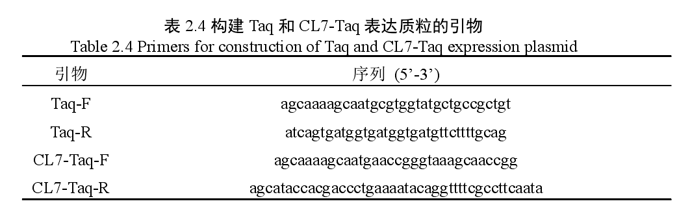
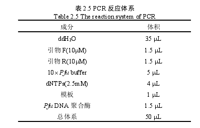
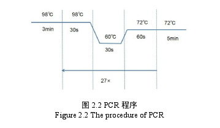
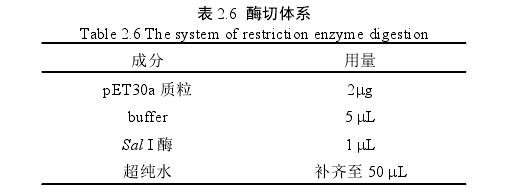
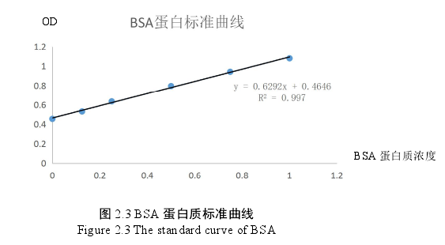

一、构建CL-7 Taq酶表达质粒和Taq酶表达质粒
1.在金开瑞生物公司合成编码来源于Thermus aquaticus YT-1的Taq酶基因序列（GenBank:P19821.1）和来源于大肠杆菌CE7突变体CL7的基因序列(GenBank:CP018986.1)；
2.设计用来扩增两段基因序列的引物。如表2.4示，引物在Taq基因两端的序列与载体的序列同源，在 Taq DNA 聚 合 酶 的C端加His标签（CATCACCATCACCATCAC）用于亲和纯化，并从合成质粒上将Taq(2493 bp)、CL7(390 bp)全长基因扩增出来，PCR体系如表2.5所示，PCR流程图如图2.2所示;
  3.用SalI限制性内切酶处理pET30a载体，酶切体系如表 2.6 所示，分别回收酶切后的载体与 Taq 基因片段，利用 T5 核酸酶介导的克隆方法来构建pET-30a-Taq表达质粒和pET-30a-CL7-Taq 表达质粒。
二、T5核酸酶介导的体外重组
1.用Sal I酶在 37℃下酶切 pET-30a 1h，用琼脂糖凝胶电泳检测质粒是否切完全，然后用胶回收试剂盒回收扩增的 DNA 片段和酶切后的载体，用核酸定量仪测定浓度；
2.在冰水混合物上将片段和载体的摩尔数按照 3:1 的比例混匀后，然后加入一个酶活单位的 T5 核酸外切酶，在冰水混合物(4℃)酶切5 min；
3.加入30-50μLDH5α感受态细胞混匀后在冰水混合物(4℃)放置30min，然后在42℃热激45s，加入150μLNZY在37℃摇床孵育45 min后均匀涂布在加有卡那抗生素的LB平板上，最后放入37℃培养箱中倒置培养12-15h；
4.挑取5-10个单菌落至含有 50μg/mL卡那霉素的LB液体培养基中，37℃摇床培养6-8h后，用菌液做PCR筛选阳性重组子，最后用质粒抽提试剂盒提取质粒 DNA 并送至生工生物公司测序部门测序。
三、CL7-Taq 蛋白质的表达
1.将测序正确的 pET30a-Taq 和 pET30a-CL7-Taq 表达质粒分别转化至大肠杆菌BL21(DE3)感受态细胞中。
常规转化步骤：在2μL的质粒中加入30~50μL的感受态细胞，混匀后冰浴30min，之后在42℃水浴锅中热激45s；热激之后在冰上静置2min，再加入100μL的NZY，在37℃摇床中培养1h；培养完成后在超净工作台上进行平板涂布操作，最后将平板倒置于37℃培养箱中过夜培养。
2.观察过夜培养的平板中单菌落的生长情况，挑取多个单菌落，并接种到含有70μL卡那霉素的200 mLLB液体培养基中，然后置于37℃恒温摇床中震荡培养；
3.待OD值达到0.6时，加入200μL IPTG诱导Taq DNA聚合酶的表达，然后置于18℃摇床中培养16-18h左右；
4.最后用低温超速离心机在 7000 rpm/min 离心 5 min 收集菌体。
四、CL7-Taq 蛋白质的纯化
1.破碎前，向菌体中加入20mL 10mM的咪唑液，再加入200μL PMSF（1%的蛋白酶抑制剂）涡旋混匀。将装有菌液的离心管插入冰上，使用超声波细胞粉碎机(450 W，15 min)破菌。破碎后加入20μL PMSF（1‰）。
2.将破碎后的菌液分装至2mL离心管中，用低温高速离心机14000rpm 30min离心，去除细胞碎片，将上清收集至原离心管中。
3.提前将集热式恒温加热磁力搅拌器调至75℃。将离心管套上浮子，放入搅拌器中水浴30min。每五分钟取出颠倒混匀。将水浴后的菌液分装至2mL的离心管中，用低温高速离心机14000rpm 25min离心，去除已变性宿主蛋白，收集上清。
4.激活镍柱。使用高浓度咪唑洗30min，去除镍柱中残存的杂蛋白；用RO水洗3次，每次3min；用Taq洗脱缓冲液洗2次，每次3min；使用10mM咪唑激活，振荡10min。将上清加入已激活的镍柱中，放入4℃冰箱摇床上孵育1h。
5.准备冰盒，洗脱下的液体收集后马上放入冰盒中。收集流穿，依次用10mM，20mM，50mM，100mM，200mM咪唑洗脱镍柱。
首先取10mL 10mM咪唑洗脱，每次洗脱3min，不断振荡。后用50mL离心管收集洗脱液，洗脱2-3次，直至检测洗脱液中无蛋白（加入G250不变蓝），即可进行高浓度咪唑洗脱，方法一致。
6.提前收集总Taq酶液，Taq酶上清液，Taq酶沉淀（加入2mL Taq洗脱缓冲液混匀），Taq酶高温上清液，Taq酶流穿，Taq酶10mM，20mM，50mM，100mM，200mM，300mM咪唑洗脱液各80μL，按4:1加入20uL loading buffer混匀。100℃煮10min，离心后用 SDS-PAGE 电泳检测洗脱液中蛋白质的纯度。
7.将条带较单一的洗脱液转移至超滤管中，用 Taq DNA 聚合酶的储存缓冲液对样品超滤换液并浓缩，-20℃冷冻保存。
五、CL7-Taq 蛋白质浓度的测定
1.选用 Bradford 试剂盒来测定 CL7-Taq 蛋白质的浓度。先用 Taq DNA 聚合酶的储存缓冲液稀释 BSA 蛋白质标准品至 0.5mg/mL，接着稀释至 0.4、0.3、0.2、0.1、0.05、0.025 mg/mL；
2.在 595 nm 的波长下，用酶标仪测定不同浓度的 BSA 标准品所对应的 OD值，同时做 3 组重复平行实验，绘制 BSA 标准曲线，如图 2.3 所示；
3.将纯化后的 Taq 和 CL7-Taq 蛋白质样品用同样的方法在酶标仪下检测OD 值，做 3 组重复平行实验，取平均值带入 BSA 标准曲线的方程式中计算Taq酶的浓度和CL7-Taq酶的浓度。
六、CL7-Taq DNA聚合酶各项性质的检测
1.分别用1U/μL的CL7-Taq DNA聚合酶和Taq DNA聚合酶在99℃下加热10、20、30、40、50、60 min和95℃加热1、2、3、4、5 h。在最适反应条件下，用相同的酶量扩增445 bp的靶基因。通过检测在95℃或99℃加热不同时间后的酶活来表现热稳定性。
2.在相同条件下，以 pET23a/dcas9 质粒 DNA 为模板，分别用 1U 的 CL7-Taq DNA 聚合酶和 Taq DNA 聚合酶扩增 4 条大小不同的PCR片段，大小分别为1、2、3 和4 kb，同时延伸时间设定为1 min，即 72℃延伸60s。对比PCR结果分析CL7-Taq DNA聚合酶和Taq DNA 聚合酶的延伸速率。
3.选用肝素、乳铁蛋白和血液这三种PCR抑制剂。将这三种抑制剂分别稀释至不同浓度，将肝素稀释至0、1、2、4、6、8、10、12、14、16 μg/μL，乳铁蛋白稀释至0、0.5、1.0、1.5、2.0、2.5、3.0、3.5、4.0 μg/μL，血液含量分别为0、2、4、6、8、10 %。将人类细胞基因组DNA作为模板，设计引物HG-F和HG-R来检测β-actin基因。PCR产物的大小为653bp，用1%琼脂糖凝胶对扩增片段进行凝胶电泳并用溴化乙锭染色。然后对CL7-Taq DNA聚合酶和Taq DNA聚合酶在不同浓度抑制剂下的催化活性进行比较，检测CL7-Taq DNA聚合酶对抑制剂耐受性。